Nyzo version 510 (commit on GitHub) adds UDP messaging for block votes. This messaging, however, is not yet active by default.
This version affects only the verifier. The sentinel does not accept incoming connections, and it does not send block votes.
Please read and understand the release notes before updating, as this version requires some manual steps not required of most updates.
If you are too rushed to read the full release notes right now, these are the two additional manual steps required for this update. First, open port 9446 to UDP only (port 9444 should remain open to TCP only). Second, run this command on your verifier after you have updated to flush firewall rules:
sudo iptables -F
Nyzo previously used TCP for all messages. A new connection is established for each message. This results in significant computational, networking, and memory overhead. To improve verifier performance and stability, this version adds the option of using UDP for sending of block votes. While other message types may be tested with UDP in the future, block votes comprise the vast majority of messages in Nyzo. Sending just this one message over UDP minimizes the complexity of changes while providing a significant reduction in network traffic and the local computing resources required to support that traffic.
To allow more time for performance testing, this version does not activate UDP messaging by default. Individual verifiers may choose to activate UDP, but those verifiers should be watched closely to ensure adequate performance scores.
The README file has been changed with instructions for opening port 9446 to incoming UDP traffic. This is an important step. If you activate UDP and do not open the UDP port, your verifier will lose all block votes sent by UDP-capable verifiers.
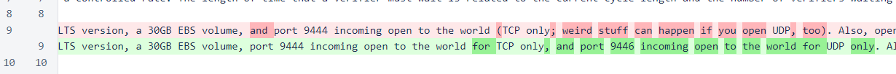In the BlacklistManager class, use of iptables has been eliminated completely.
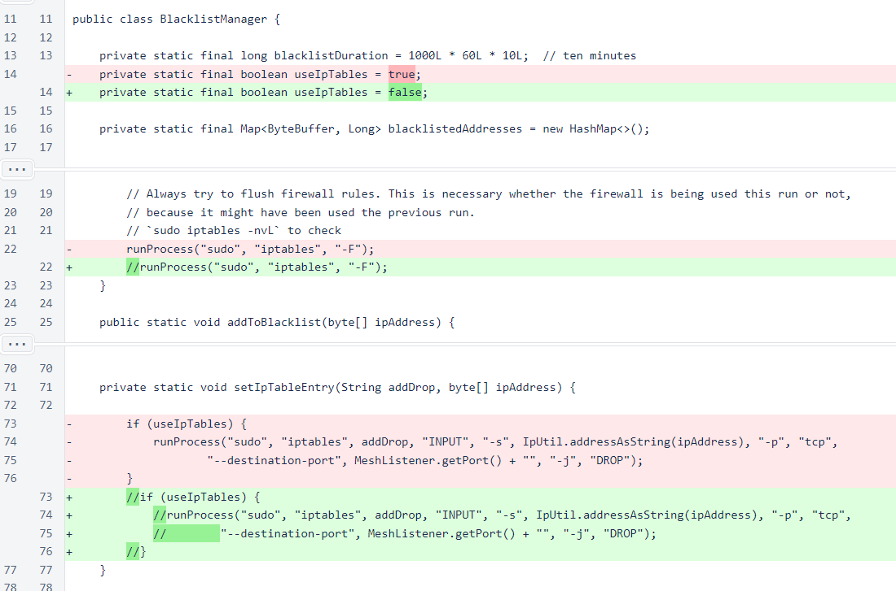This removal includes removal of the command to flush firewall rules, so some rules may be left from previous blacklisting by the verifier. If you are unfamiliar with iptables, run this command once after updating your verifier to this version to ensure that old rules are eliminated:
sudo iptables -F
The Message.fetch() method has been changed to accept a Node object as an IP/port source. This is more concise, and it also allows the message class to dynamically choose between TCP and UDP based on the properties of the Node object and the type of message. In all places where Message.fetch() is used an an appropriate Node object is available, this method is now used. If an appropriate node object is not available, then the Message.fetchTcp() method, which is functionally equivalent to the old Message.fetch() method, is used instead.
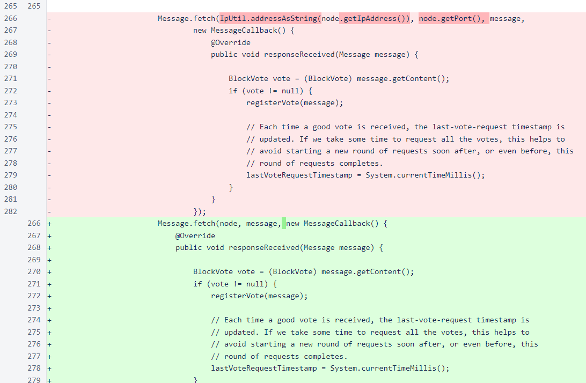In the FieldByteSize class, an overload of the string() method has been added to allow a maximum string byte length to be specified. This is used by NodeJoinMessageV2 and NodeJoinResponseV2 to enforce a limit on nickname length.
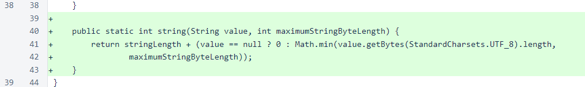The MeshListener class has been modified to listen to UDP traffic in addition to TCP. The static alive field has been split into aliveTcp and aliveUdp. A fixed-size buffer has been added for receiving UDP packets.
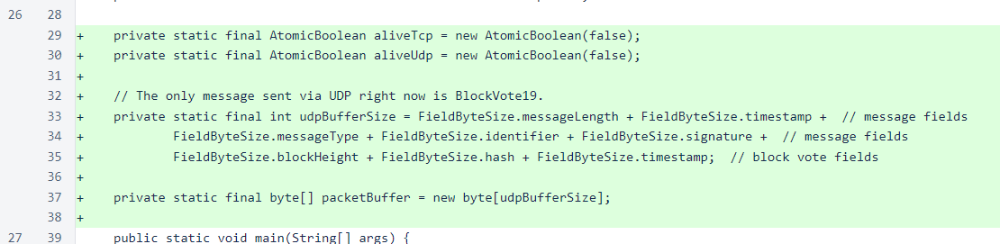The TCP socket is functionally unchanged, and the UDP listener is a tight loop that reads packets from a DatagramSocket.
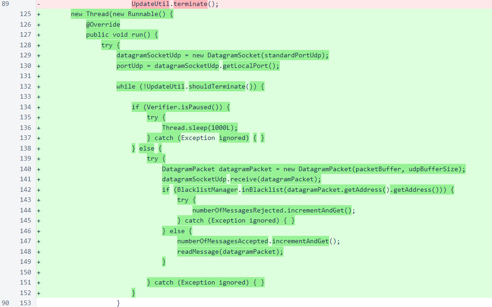UDP messages are read from the incoming packet using the same Message.fromBytes() method that is used for incoming TCP messages. Unlike the TCP listener, which responds to all valid messages, the UDP listener does not yet send responses to any incoming messages.
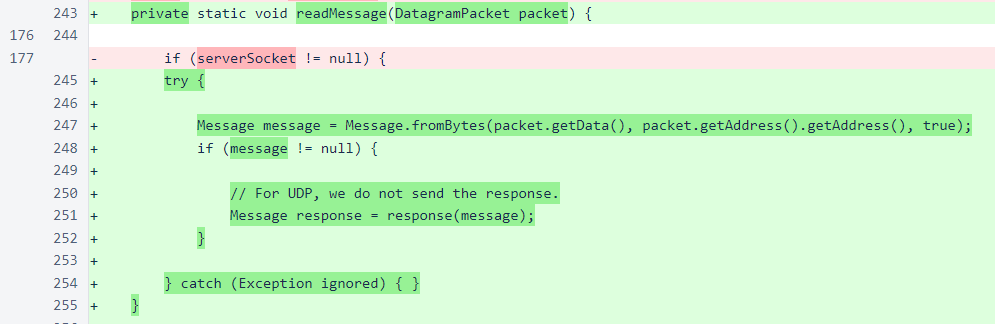In the response() method of MeshListener, a response to the new node-join message has been added.
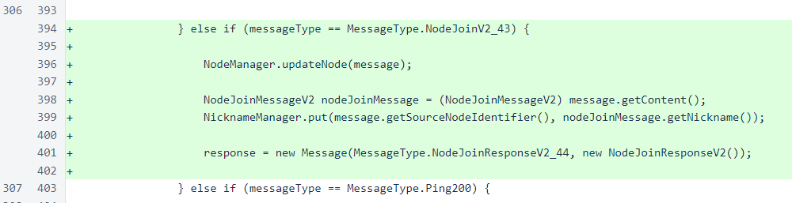A DatagramSocket has been added to the Message class. This is used for outgoing UDP messages.
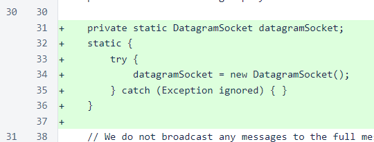This modified fetch() method now determines whether to use TCP or UDP based on the message type and whether the Node accepts UDP.
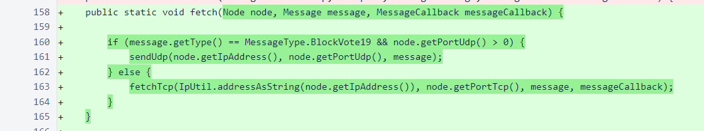The Message.fetch() method that accepts an IP and TCP port has been renamed to fetchTcp() to avoid confusion, and the Message.sendUdp() method has been added. The sendUdp() method uses the same blacklist-avoidance logic as its TCP counterpart, and it does not currently look for any response to messages.
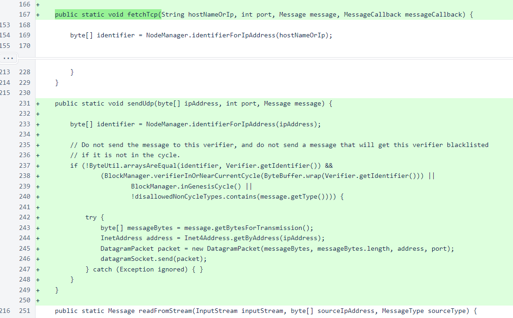A discardMessageLength parameter has been added to Message.fromBytes() to allow for the difference in how the TCP and UDP byte arrays for incoming messages are obtained.
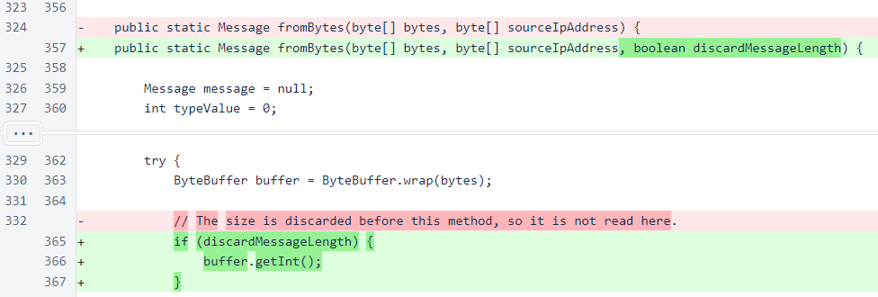Deserialization of NodeJoinMessageV2 and NodeJoinResponseV2 has been added to the Message.processContent() method.
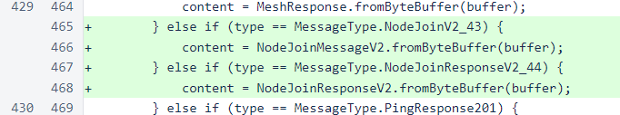Overloads of Message.putString() and Message.getString() have been added to allow specification of the maximum byte length of the string in the message. These methods are used for the nickname fields of the new node-join message and response.
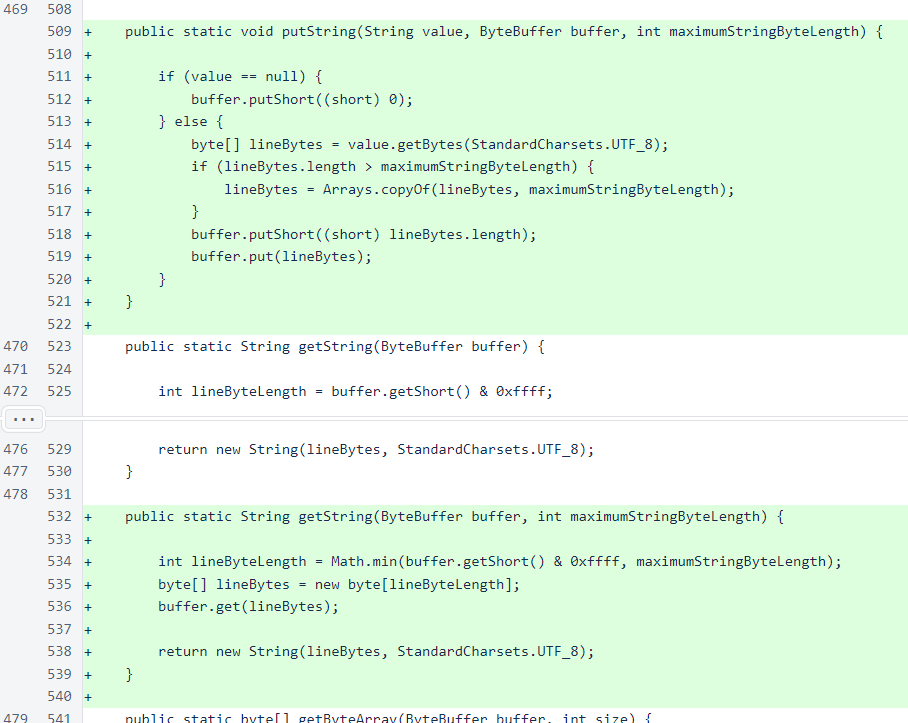The port field of Node has been renamed to portTcp, and the portUdp field has been added.
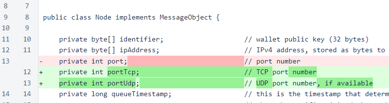To maintain compatibility of messages containing serialized Node objects, the UDP port is not serialized. Also, this port is unnecessary in those messages, as initial communication between two verifiers will always happen over TCP, at which time UDP port information can be exchanged.
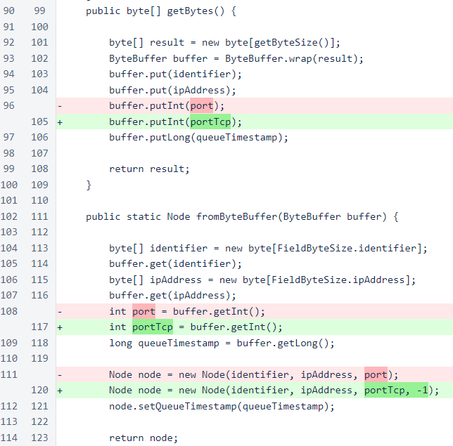The NodeManager.updateNode() method is now aware of UDP-capable nodes.
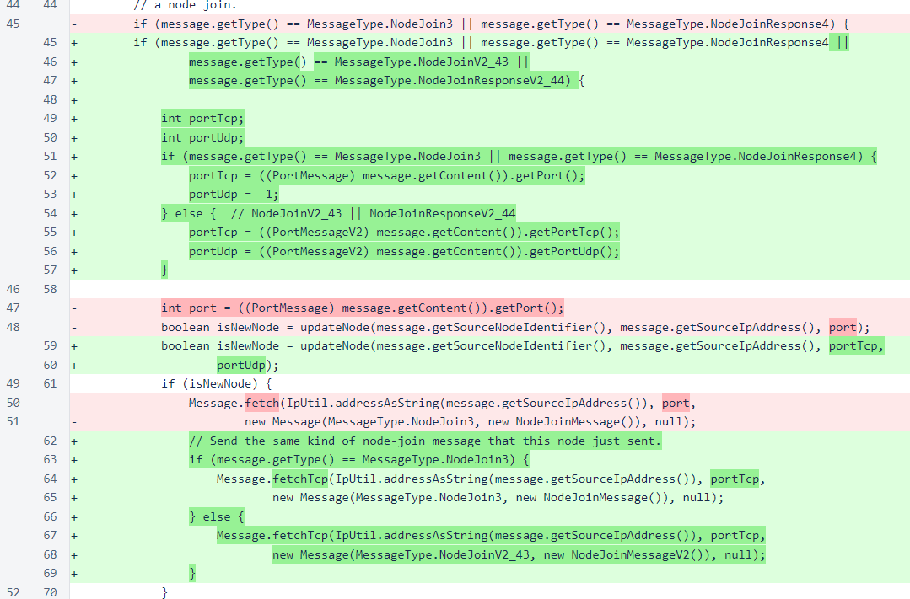While the TCP port is updated with each node update, the UDP port is only updated when the new UDP port is valid. This prevents v1 node-join messages and responses from deactivating UDP for a verifier, but it also means that once UDP is activated for a node, it cannot be disabled without changing the IP of that node.
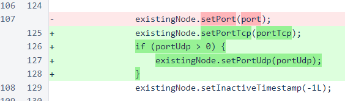The NodeManager.sendNodeJoinRequests() method now contains code for sending both the v1 and v2 node-join requests. The v2 code is currently commented out. This code does work, however, and all of the other pieces of the UDP mechanism are active in this version. So if you activate this code, your verifier will begin to receive over UDP instead of TCP all block-vote messages from verifiers running version 510 or later.
The v1 node-join message will be removed completely in a later version. It is currently still necessary for maintaining connections to verifiers running 509 or earlier.
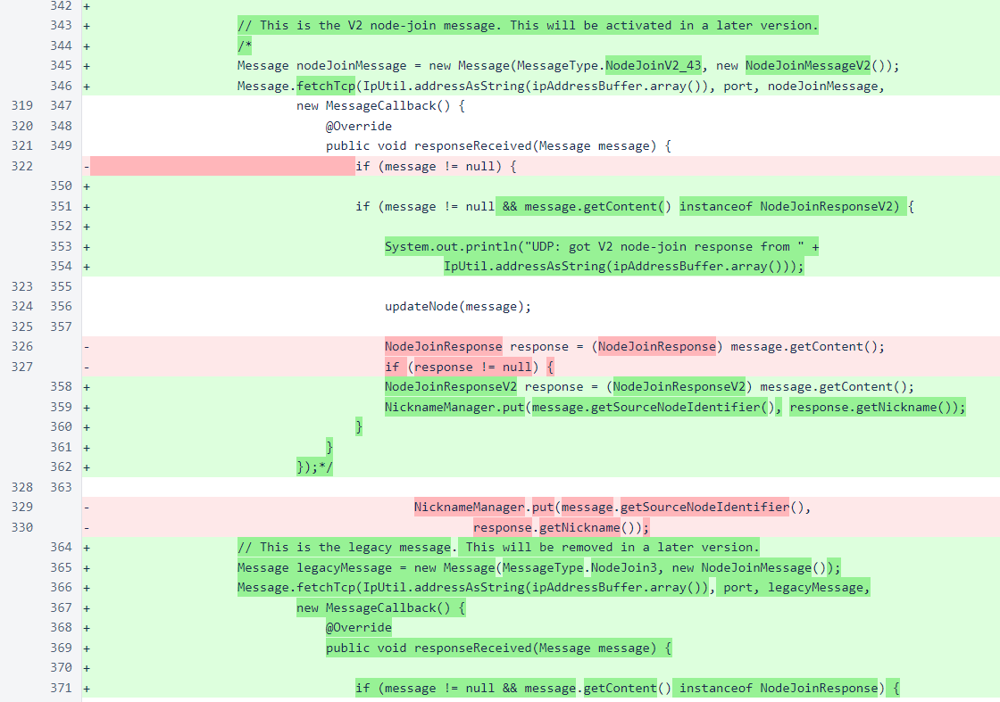The node-join messages sent to trusted entry points are still using the v1 message. When enough of the cycle has updated to version 510 or later, this will be changed to the v2 message.
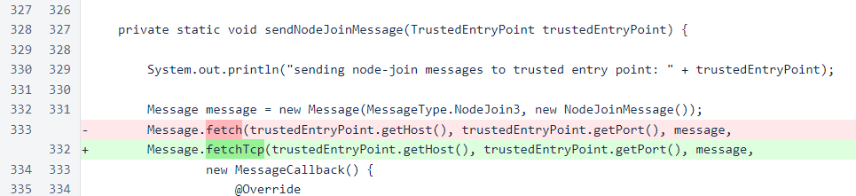The file for verifier performance scores has been updated to another new filename. This will cause scores of all verifiers to reset to zero. This will allow a few days of leeway in which no verifiers should be removed for their performance scores. When version 511 is released, the performance scores will be reset again to ensure that all verifiers in the cycle start at a common point with the updated scoring system.
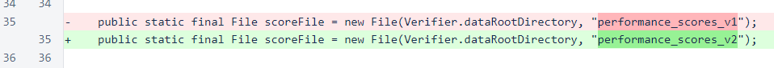The PortMessage interface has been removed from BootstrapRequest, and the port can no longer be specified in the public constructor. In previous versions, the port was included in this message, and it was used to update the port with the NodeManager. With the advent of the sentinel, NodeManager updates were restricted to node-join and node-join-response messages only. Elimination of the PortMessage interface from this class makes the code easier to understand. While the port is no longer used, it is still serialized and deserialized to maintain message compatibility and signature integrity.
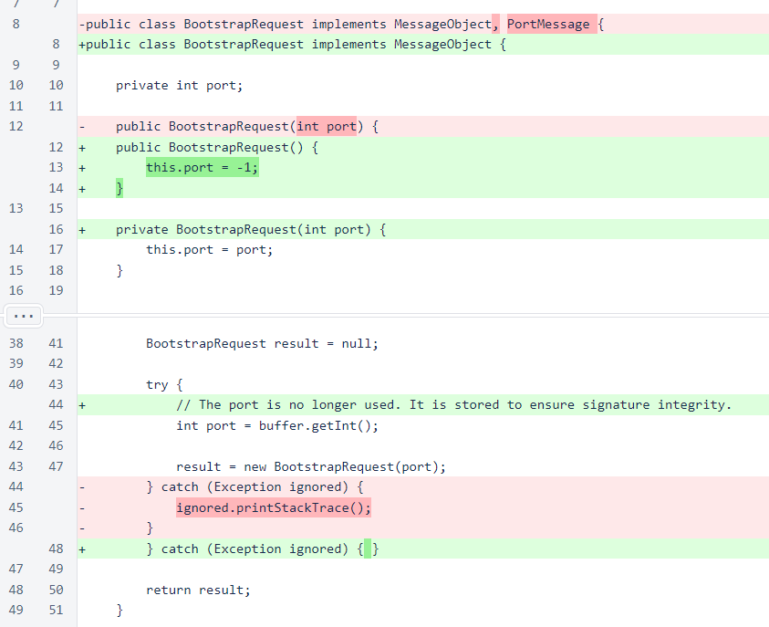The PortMessage interface has also been removed from the NewBlockMessage class.
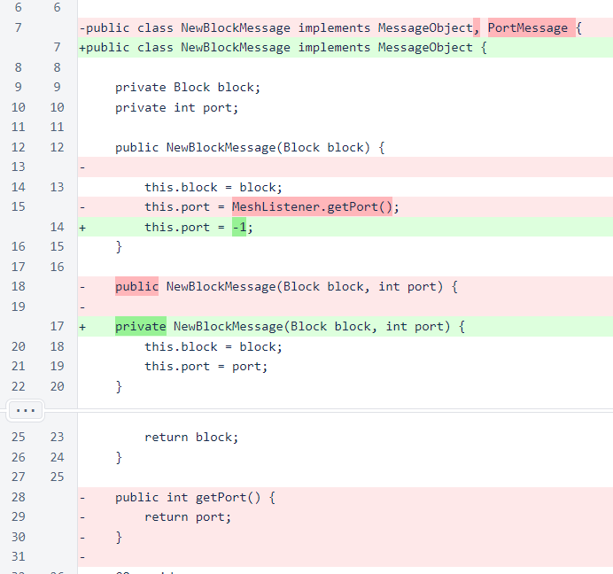In a change unrelated to the addition of UDP, the VerifierRemovalTallyStatusResponse is now sorted on descending vote count to improve readability of the response.
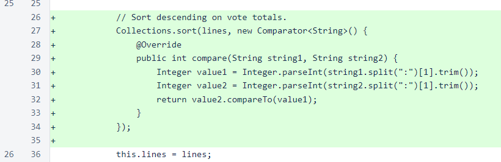